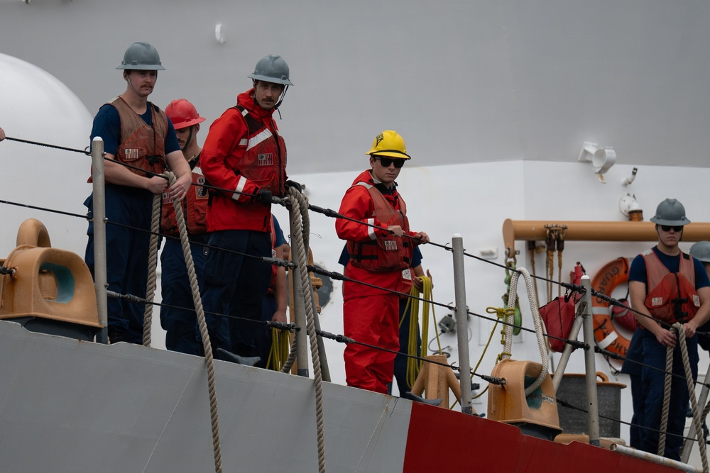

Petty Officer 3rd Class Rashaad Reid · DVIDS 10072624 · Public domain · Coast Guard Cutter Tahoma crew members handle mooring lines at Port Everglades, Florida, Nov. 4, 2026. Posted Nov. 5, 2026.
DVIDS
Tahoma's crew offloaded 3,622 pounds of cocaine at Port Everglades on Wednesday
A Coast Guard still posted Thursday shows cutter Tahoma's crew handling mooring lines at Port Everglades, Florida, on Nov. 4. The caption says the crew offloaded about 3,622 pounds of cocaine after two interdictions in the Caribbean Sea. A DVIDS video of the same offload values the narcotics at about $27 million and identifies Tahoma as a 270-foot medium endurance cutter homeported at Naval Station Newport, Rhode Island. The frame is the ship and the pier, not a press photo.
DVIDS · Read source →